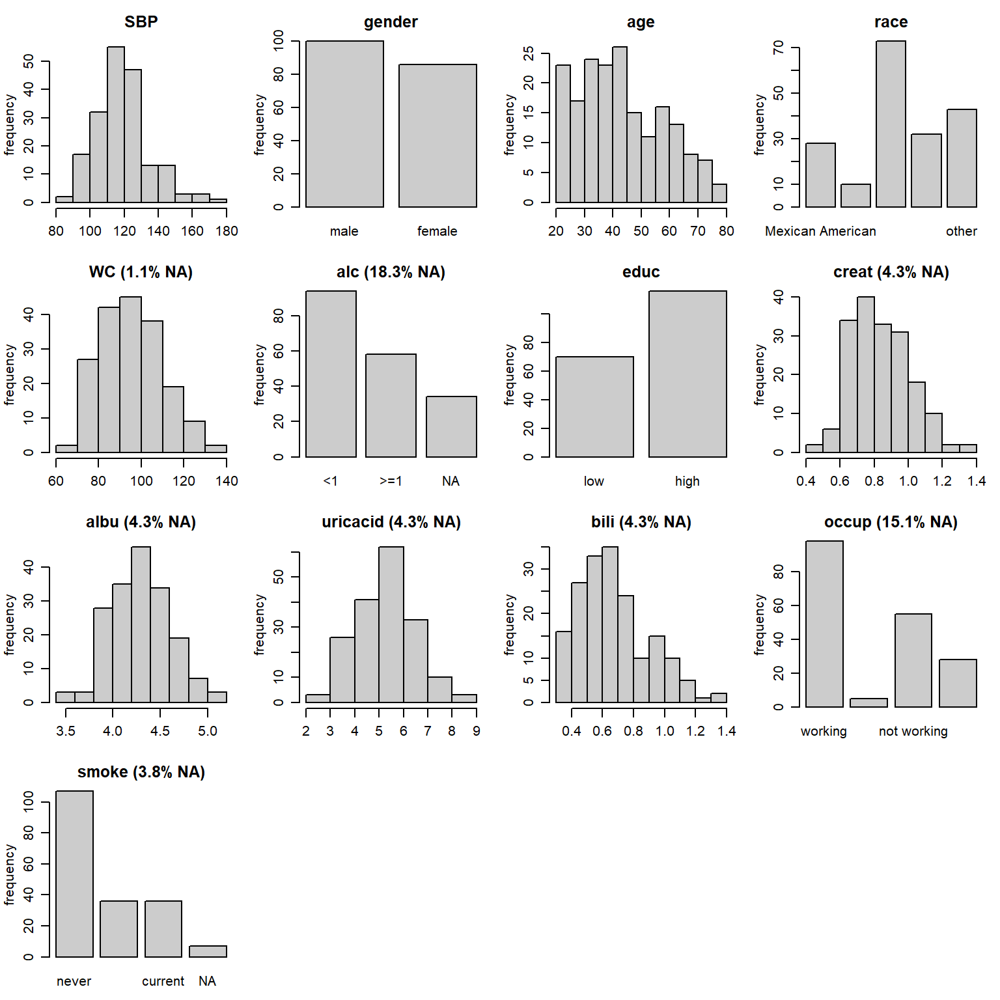
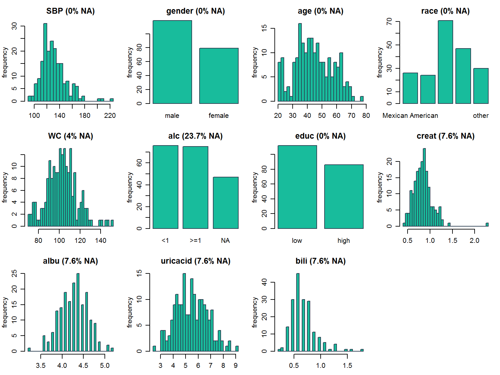
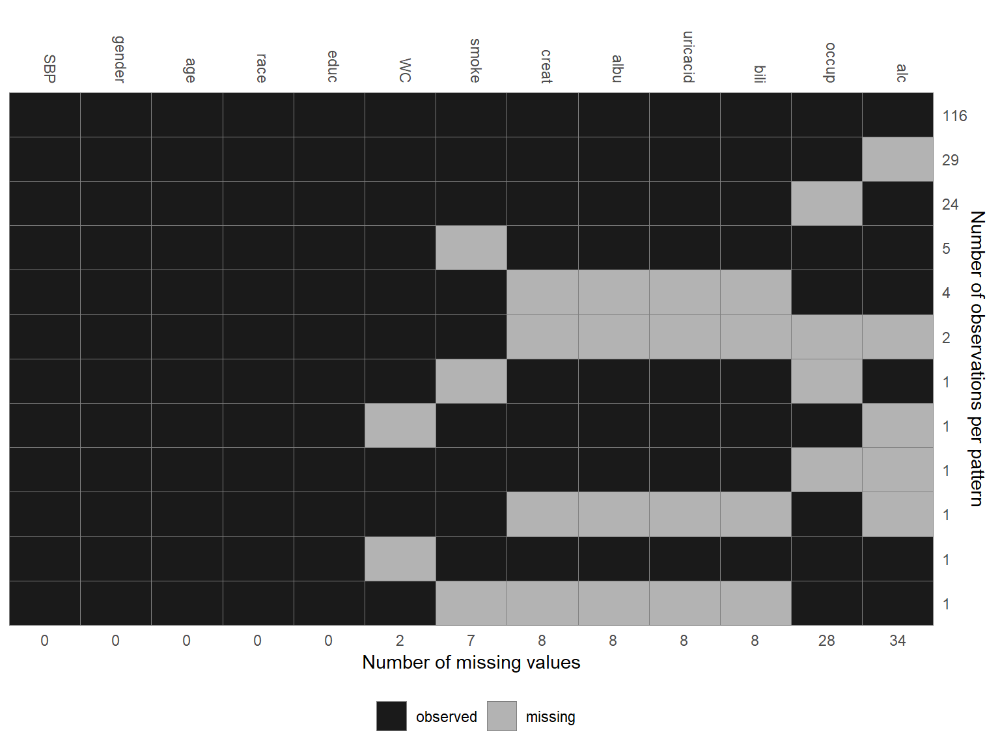
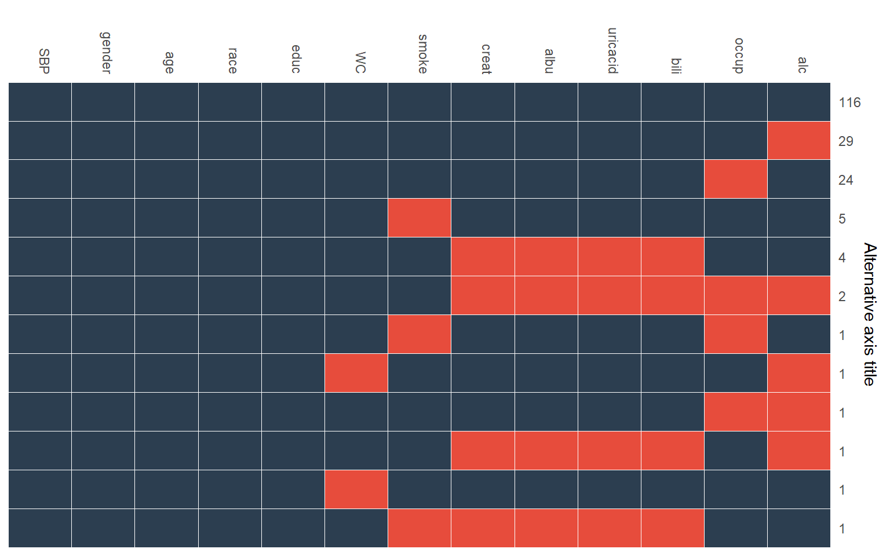
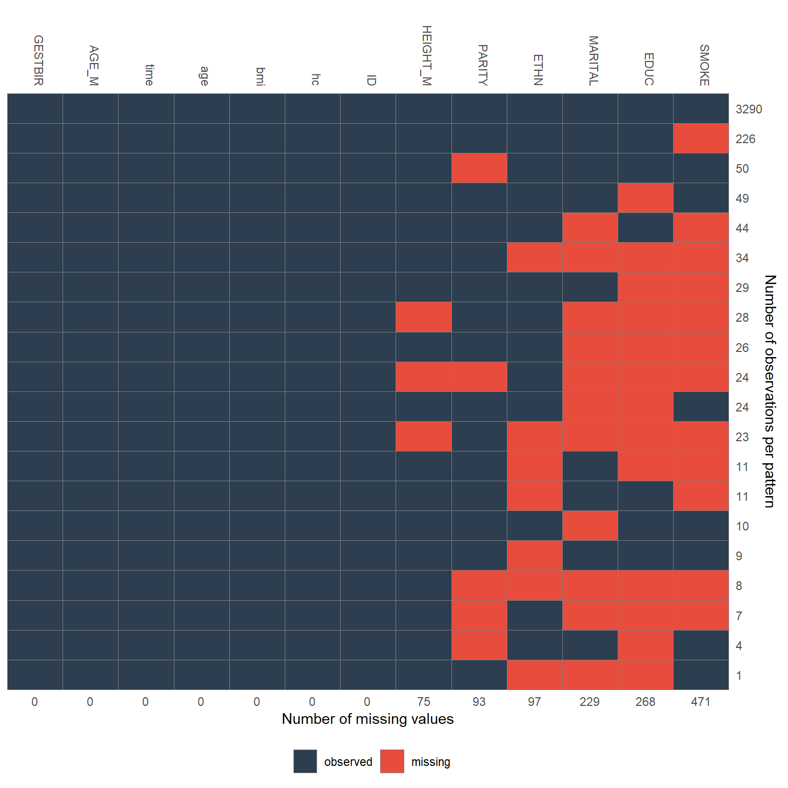

Visualizing Incomplete Data
Nicole Erler
2018-10-22
Source:vignettes/VisualizingIncompleteData.Rmd
VisualizingIncompleteData.RmdWhen analyzing data with missing values it is important to be familiar with the variables of interest, i.e., to know their measurement level and distribution as well as the amount of missing values per variable, and to investigate the pattern of missing values.
Currently, the package JointAI has two function that help this fist exploration of an unknown dataset.
In this vignette, we use the NHANES data and the simLong data, that are part of the JointAI package. For more info on these datasets, check the help files for the NHANES and for the simLong data or go to the web page of the National Health and Nutrition Examination Survey (NHANES).
Visualize the distribution of each variable
Using plot_all(), an array of histograms (for continuous variables) and barplots (for categorical variables) can be obtained.

Note: Here, we are looking at the marginal distribution of each variable. Since missing values in one variable are (usually) imputed conditionally on other variables, marginal plots can only be used as an indication of what type of imputation model (e.g., normal vs. non-normal) is appropriate.
Plot titles: proportion of missing values
The argument allNA allows to select whether the proportion of missing values is given only for incomplete variables or (by setting allNA = TRUE) for all variables.
Changing colors
The color of the bars and their border can be controlled with the arguments fill and border.
Layout
Depending on the number of variables in the data, the number of rows and columns of the plot layout is determined automatically, but can be overwritten using nrow and/or ncol.
Additional arguments
It is also possible to provide some of the other arguments of hist() or barplot().
For example:
par(mar = c(2.5, 3, 2.5, 1), mgp = c(2, 0.8, 0))
plot_all(NHANES, allNA = TRUE, fill = '#18bc9c', border = '#2C3E50',
ncol = 3, nclass = 30)
Multi-level data
When the data has a multi-level structure, e.g., subjects are nested within hospitals, or subjects have been measured repeatedly, as in the simLong data, the level of each variable can be taken into account by specifying use_levels = TRUE and providing the name of the id variable in the argument idvar.
par(mar = c(2.5, 3, 2.5, 1), mgp = c(2, 0.8, 0))
plot_all(simLong, allNA = TRUE, fill = '#18bc9c', border = '#2C3E50',
ncol = 3, nclass = 30, use_level = TRUE, idvar = "ID") The information whether a variable is level-1 (i.e., varies within the groups specified by
The information whether a variable is level-1 (i.e., varies within the groups specified by idvar) or level-2 (i.e., constant within the groups) is added to the title of each plot, and level-2 variables are plotted on he group-level instead of the observation level.
Missing Data Pattern
The pattern of the missing data can be visualized with the function md_pattern():

In the resulting plot, variables are given in the columns and each row corresponds to one pattern of missingness across the variables. The numbers on the right margin give the number of cases per pattern. Underneath the plot, the number of missing values per variable are given. Columns are automatically sorted by number of missing values, rows by number of cases per pattern.
The plot is generated with the help of ggplot(), and, hence, the package ggplot2 needs to be installed. By setting plot = FALSE, no plot will be generated, but you can still obtain the missing data pattern in matrix form:
Missing data pattern as a matrix
When the argument pattern = TRUE is set, the missing data pattern is returned as a matrix, where observed values are represented by a 1 and missing values by a 0:
md_pattern(NHANES, pattern = T, plot = F)
#> SBP gender age race educ WC smoke creat albu uricacid bili occup alc Npat
#> 1 1 1 1 1 1 1 1 1 1 1 1 1 1 116
#> 2 1 1 1 1 1 1 1 1 1 1 1 1 0 29
#> 3 1 1 1 1 1 1 1 1 1 1 1 0 1 24
#> 4 1 1 1 1 1 1 0 1 1 1 1 1 1 5
#> 5 1 1 1 1 1 1 1 0 0 0 0 1 1 4
#> 6 1 1 1 1 1 1 1 0 0 0 0 0 0 2
#> 7 1 1 1 1 1 1 0 1 1 1 1 0 1 1
#> 8 1 1 1 1 1 0 1 1 1 1 1 1 0 1
#> 9 1 1 1 1 1 1 1 1 1 1 1 0 0 1
#> 10 1 1 1 1 1 1 1 0 0 0 0 1 0 1
#> 11 1 1 1 1 1 0 1 1 1 1 1 1 1 1
#> 12 1 1 1 1 1 1 0 0 0 0 0 1 1 1
#> Nmis 0 0 0 0 0 2 7 8 8 8 8 28 34 103Changing colors
The arguments color and border can be used to change the color that is used for observed and missing values (in that order, i.e., color is a vector of length 2), and the border separating the rectangles, respectively.
Legend position
The position of the legend can be controlled with the argument legend.position, which can be one of "left", "right", "bottom" or "top". When legend.position = 'none', no legend is printed.
Changing the axes
To hide the x-axis, the argument print_xaxis can be set to FALSE. With the corresponding argument print_yaxis = FALSE the y-axis can be omitted.
To change the title of the y-axis, you can change the argument ylab. Setting ylab = '' will hide the axis title, but keep the number of observations per missing data pattern.
md_pattern(NHANES, color = c('#2C3E50', '#E74C3C'), border = 'white',
legend.position = 'none', print_xaxis = FALSE,
ylab = 'Alternative axis title')
For the simLong data, the missing data pattern is:
